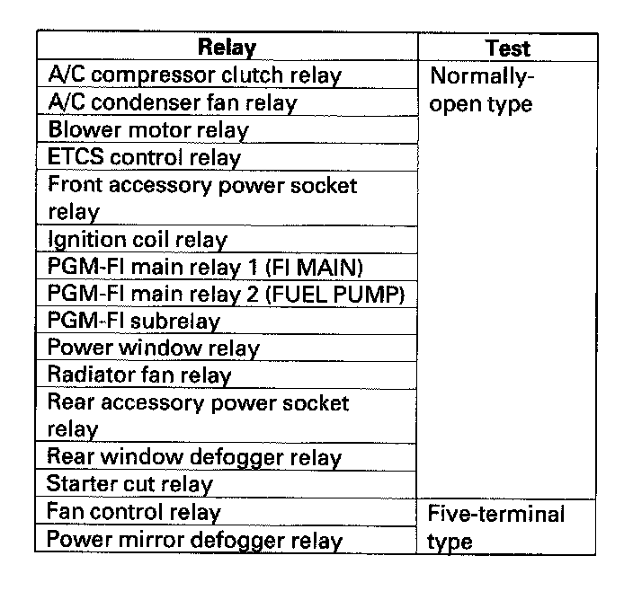
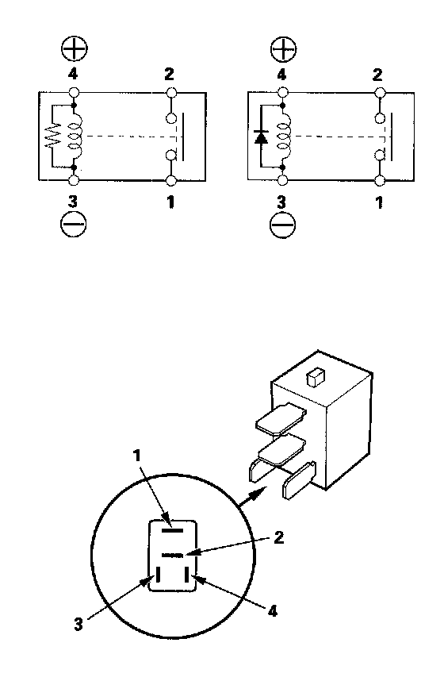

Power Window Relay: Testing and Inspection
Power Relay Test
Use this chart to identify the type of relay, then do the test listed for it.

Normally-open type
Check for continuity between the terminals.
- There should be continuity between the No.1 and No.2 terminals when battery positive terminal is connected to the No.4 terminal, and battery negative terminal is connected to the No.3 terminal.
- There should be continuity between the No.1 and No.2 terminals when power is disconnected.